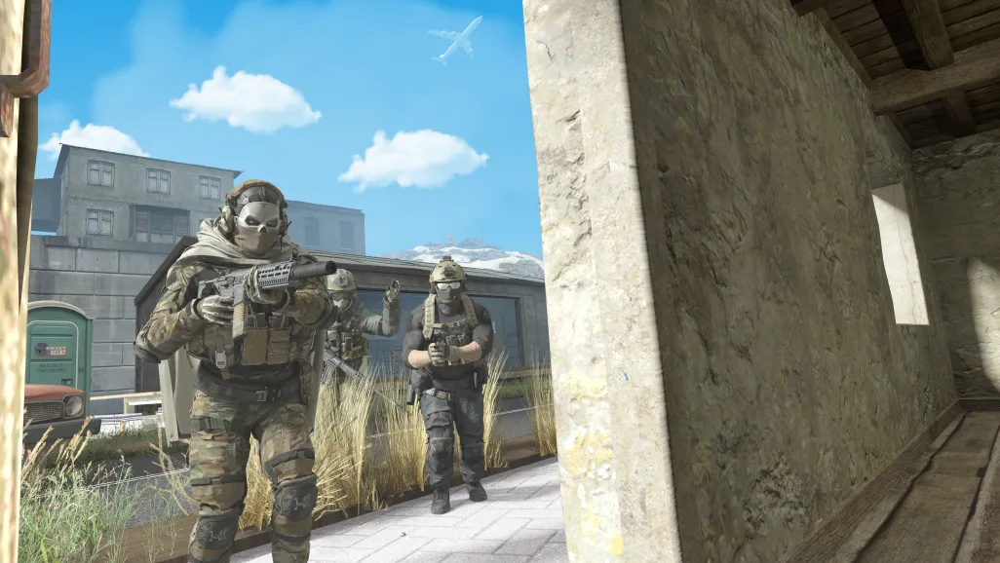
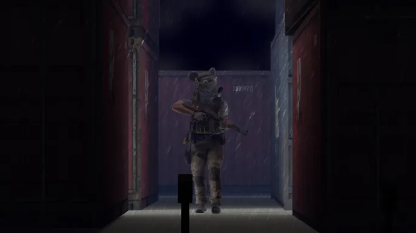
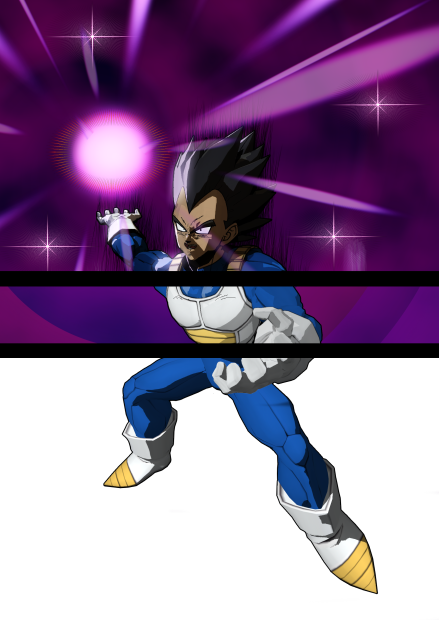

Most of these art pieces were for myself, or for practice for something bigger or more important, like for School Assignments or for just being a Freelance Render Artist in general. Its a little passtime that I enjoy doing.
It's easier to drag and slide the images. All of these render works have been used by a 3D Program that can be used to take models online to render them and add lighting and other things to make a "poster", or render artwork of sorts.
Here are a couple more realistic renders about Call of Duty, an FPS shooter.
 This is another edit of the render I did in the main page, but sliced into thirds of how the basic development goes after getting the renders right.
This was my own work that I wanted to dedicate myself to doing it right. I'm really proud of how this one turned out the most.
The picture below is also similar, but done months later, when I have more free time to get the render right.

The Carousel of images to the left also goes under a similar shading method, while the thumbnail and the other stray pictures to the left is more realistic shading.